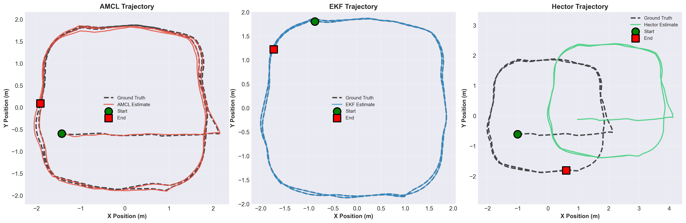
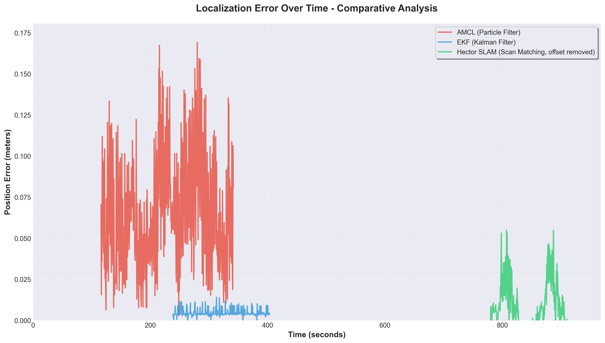
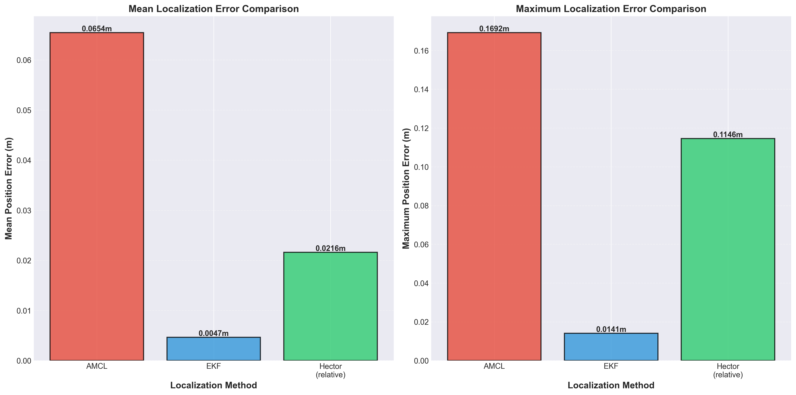
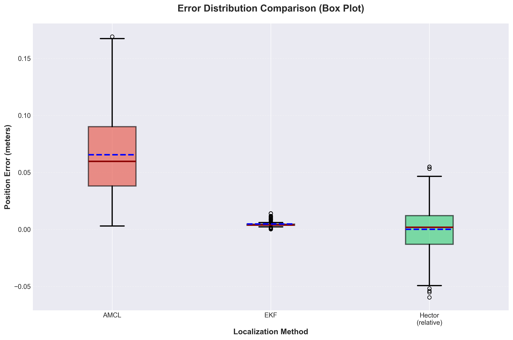

Comparing three indoor-localization strategies on a TurtleBot3 in simulation, each measured against Gazebo ground-truth trajectories.
A mobile robot has to know where it is. Three common answers — AMCL (a particle filter over a known map), an Extended Kalman Filter (fusing odometry and sensors), and Hector SLAM (building the map while localizing) — make different trade-offs. The goal was to quantify those trade-offs on identical runs rather than argue them in the abstract.
The EKF was the most accurate, with a mean position error of 0.0047 m — its tight fusion of wheel odometry and sensor updates kept drift low on this well-behaved map. AMCL stayed robust but coarser (particle spread), while Hector SLAM carried a scan-matching offset from building the map online. Practically: AMCL for known-map deployment, SLAM when no map exists, EKF when odometry is trustworthy.



